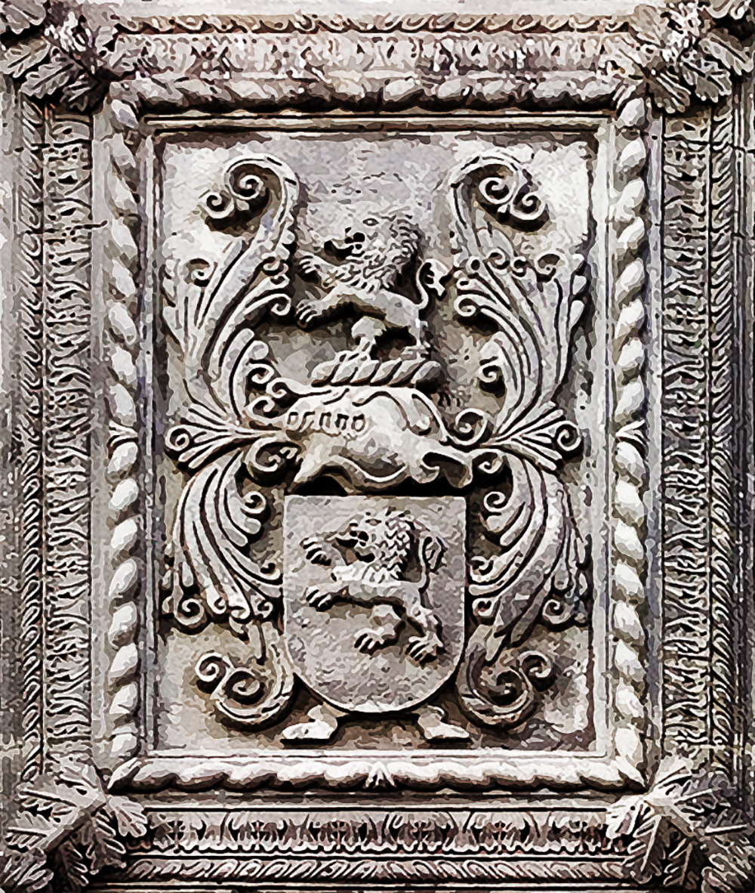

Herkunft und Bedeutung des Nachnamens Bittencourt
© Paulo Bittencourt
Wappen der Familie, an der Fassade des Palácio Bettencourt, in Angra do Heroísmo, Azoren.
Mit wie vielen Ts macht man ein Bittencourt?
Von all seinen Brüdern und Schwestern, war mein Vater der einzige, der mit einem Rechtschreibfehler registriert wurde, weshalb, auf meiner Geburtsurkunde, mein Nachname nur ein T in der Mitte hat: Bitencourt. Im Internet schreibe ich ihn mit zwei, um der ursprünglichen Schreibweise der Familie zu entsprechen. Aber ist Bittencourt mit zwei Ts in der Mitte wirklich die ursprüngliche Schreibweise dieses Nachnamens?
Viele Bittencourts sind stolz auf ihr Doppel-T und sagen, es ist die korrekte, da die originale, Schreibweise dieses Familiennamens. Sie denken wohl, das Doppel-T verleiht ihm einen Hauch von Noblesse. Es tut mir leid, ihre kleine Sandburg zu zerstören, aber Bittencourt ist ein sehr alter Nachname. Wie bei fast allen Familiennamen, die sehr alt sind, ist seine genaue Herkunft unbekannt, was es unmöglich macht, seine ursprüngliche, und somit korrekte, Schreibweise festzustellen. Dazu kommt, dass er viele Veränderungen durchgemacht hat. Die älteste Erwähnung, welche aus dem 13. Jahrhundert stammt, ist Béthencourt. Wie man sehen kann, kein Doppel-T. Bittencourt mit einem I und Doppel-T ist nur die häufigste Form in Brasilien. In anderen Ländern wird dieser Nachname anders geschrieben. Die bekannteste Variante ist Betancourt, wegen der international berichteten Entführung, im Jahr 2002, der damaligen kolumbianischen Senatorin Íngrid Betancourt.
Agustín de Betancourt (Бетанкур), in Sankt Petersburg, spanischer Ingenieur, der für einen Großteil der Entwicklung Russlands verantwortlich war.
Einige ausländische Familiennamen haben eine offensichtliche Bedeutung, wie zum Beispiel der portugiesische Castelo Branco. Castelo = Schloss; Branco = Weiß. Also, Weißes Schloss. Die Bedeutung von Bittencourt, der ein französischer Nachname ist, ist nicht eindeutig. Nach dem was ich, nach langer Recherche, herausfinden konnte, ist es möglich, dass Bitten von Bete kommt und court von Hof, in diesem Fall einem Hof, in dem dieses Gemüse angebaut wird, was Bittencourt zu Rote-Bete-Garten macht.
Wenn er wirklich Rote-Bete-Garten bedeutet (und alles deutet darauf hin), sind Bittencourt und Beethoven die gleichen Familiennamen: ersterer auf Französisch; letzterer auf Holländisch. Die Eltern des zerzausten deutschen Komponisten stammten aus Belgien, wo drei Sprachen gesprochen werden: Französisch, Deutsch und Holländisch. Dort gibt es ein Dorf namens Bettenhoven, wessen Ortstafel auf Französisch sagt (“ta, ta, ta, taaaaa…”) Bettincourt! Was für ein Zufall, nicht wahr? Es gibt Leute, die sagen, der Nachname Beethoven stammt aus diesem Ort.
Da Holländisch und Deutsch sehr ähnliche Sprachen sind, ist es nicht schwer zu erkennen, dass Beethoven genauso durchaus Rote-Bete-Garten bedeuten kann. Beet wäre die alte Schreibweise von biet, was auf Holländisch Bete heißt. Hoven ist der Plural von hof, was Hof, aber auch Bauernhof heißt. Hof kommt vom lateinischen hortus (beide Wörter beginnen sogar mit ho), was Gemüsegarten bedeutet.
Ich wette, Sie haben Lust, eine Bittencourt-, Verzeihung, Beethoven-Sinfonie zu hören. Warum das nicht tun, während Sie eine Rote Bete mampfen?